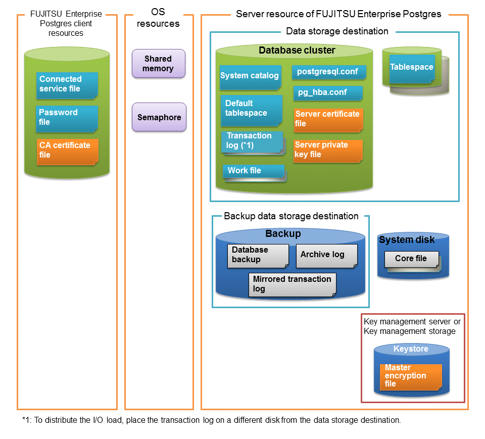

The following figure shows the configuration of the FUJITSU Enterprise Postgres operating environment. The tables given below list the roles of the OS resources and FUJITSU Enterprise Postgres resources.

Type | Role |
|---|---|
Shared memory | Used when a database process exchanges information with an external process. |
Semaphore |
Type | Role |
|---|---|
Connection service file | Specifies information, such as the host name, user name, and password, for connecting to FUJITSU Enterprise Postgres. |
Password file | Securely manages the password for connecting to FUJITSU Enterprise Postgres. |
CA certificate file | CA (certificate authority) certificate used for server authentication when encrypting communication data. |
Type | Role |
|---|---|
Database cluster | Database storage area on the database storage disk. It is a collection of databases managed by an instance. |
System catalog | Contains information required for the system to run, including the database definition information and the operation information created by the user. |
Default tablespace | Contains table files and index files stored by default. |
Transaction log | Contains log information in case of a crash recovery or rollback. This is the same as the WAL (Write Ahead Log). |
Work file | Work file used when executing applications or commands. |
postgresql.conf | Contains information that defines the operating environment of FUJITSU Enterprise Postgres. |
pg_hba.conf | FUJITSU Enterprise Postgres uses this file to authenticate individual client hosts. |
Server certificate file | Contains information about the server certificate to be used when encrypting communication data and authenticating a server. |
Server private key file | Contains information about the server private key to be used when encrypting communication data and authenticating a server |
Tablespace | Stores table files and index files in a separate area from the database cluster. Specify a space other than that under the database cluster. |
Backup | Stores the data required for recovering the database when an error, such as disk failure, occurs. |
Database backup | Contains the backup data for the database. |
Archive log | Contains the log information for recovery. |
Mirrored transaction log (mirrored WAL) | Enables a database cluster to be restored to the state immediately before an error even if both the database cluster and transaction log fail when performing backup/recovery operations using the pgx_dmpall command or WebAdmin. |
Core file | FUJITSU Enterprise Postgres process core file that is output when an error occurs during a FUJITSU Enterprise Postgres process. |
Key management server or key management storage | Server or storage where the master encryption key file is located. |
Master encryption key file | Contains the master encryption key to be used when encrypting storage data. The master encryption key file is managed on the key management server or key management storage. |